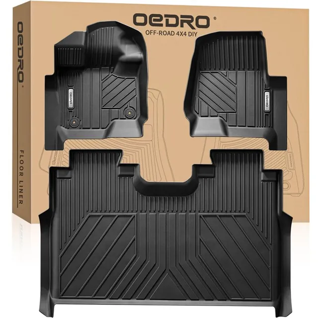

How to Install and Care for Floor Mats Safely
Replace old mats, use the correct retainers, check pedal clearance, and clean liners without creating a slippery or loose driver's mat.
In this guide
Empty the footwell before fitting
Park, apply the parking brake, and turn the vehicle off. Remove loose bottles, tools, debris, and the old removable mats. Vacuum the exposed carpet so you can see the floor shape and retention points. Keep the front passenger mat separate from the driver's mat, even if their outlines look similar.
Ford's floor-mat safety instructions warn against placing a new mat over an existing mat and require the correct retention points to be used. Stacking changes the space beneath the pedals and can leave the upper mat unsecured. Follow your own vehicle's owner's manual for its specific attachments.
Before lowering the new liners into place, compare the item label with the order. Check the cab, seating layout, floor covering, and any rear storage exclusions. A matching model name on the carton is useful, but it does not settle every interior variation.
Secure the driver's mat and inspect the pedal area
Position the mat without folding its edges underneath. Engage every attachment required by the vehicle and liner instructions. Pull gently near the attachments to verify engagement, then inspect the perimeter. The mat should sit in its intended position without an edge crowding the pedals or bunching against trim.
With the vehicle safely stationary and switched off, check the pedal area as directed by the owner's manual. Do not start a road test to find out whether a questionable mat interferes. If a retainer will not engage or the mat moves toward a pedal, remove it and resolve the application or attachment problem before use.
Do not punch new retention holes, add improvised screws, or cut away a raised edge to rescue an uncertain fit. Photograph the installed position and the retainer mismatch. Those pictures help distinguish the wrong liner from a damaged attachment or an installation mistake.
Check the passenger and rear areas
Look around seat tracks, console edges, door sills, and existing storage. Operate seats only as the vehicle manual permits, keeping hands and loose material away from their mechanisms. A rear liner should not need to be crushed under a storage box or caught in a seat latch to lie in place.
Storage exclusions can be decisive. OEDRO's F-150 SuperCrew mat listing excludes any under-seat storage box and specifies additional interior conditions. The F-150 fitment guide explains how to record those details. For other pickups, use the application for that exact liner instead of borrowing the Ford exclusions.
If you changed the interior after ordering, reconsider the rear liner before forcing it around the new equipment. A mat and storage organizer bought separately need their combined use confirmed.
Clean the mats outside the truck
Remove the liners carefully so collected grit and liquid stay contained. Start with loose debris, then follow the cleaning instructions for that material. OEDRO's inspected TPE listings describe wiping or rinsing with water. Ford's TPE liner instructions describe removing the liner and washing with soapy water; that is guidance for the Ford product, not approval of every cleaner for every material.
For an OEDRO liner, use the supplied care directions to choose a detergent or treatment. Avoid adding a glossy dressing merely to make a worn surface look new. You need a usable foot-contact surface, and an unapproved product may leave residue. Ask about a specific cleaner if the instructions do not address it.
Let the liner and any cleaned carpet dry before reassembly. Clean around the retainers so trapped grit does not hide damage. Check for tears, a distorted edge, worn attachment points, or debris that remains lodged in a channel.
Treat reinstallation as part of cleaning
Place each liner back in its correct position, engage its required attachments, and repeat the pedal and perimeter checks. A mat that was safe before washing can still be put back incorrectly. Tell anyone who details or vacuums the truck to secure the driver's mat afterward.
If the driver's liner no longer stays attached, stop using it until the cause is resolved. Send the part label, vehicle details, and clear photos through the OEDRO Help Center. Keep the loose mat out of the driver's footwell while the issue is being reviewed.
Parts in this guide
Shop floor mats
OEDRO Floor Mats for 2015-2026 Ford F150 SuperCrew Cab/ 2022-2026 F-150 Lightning SuperCrew Cab 1st & 2nd Front Row and Rear Floor LinerView on OEDRO Floor Mats Fit for 2019-2026 Chevy Silverado/GMC Sierra 1500 & 2020-2025 GMC Sierra 2500HD/3500HD Crew Cab Bench Seating w/o Rear Storage BoxView on OEDRO
Floor Mats Fit for 2019-2026 Chevy Silverado/GMC Sierra 1500 & 2020-2025 GMC Sierra 2500HD/3500HD Crew Cab Bench Seating w/o Rear Storage BoxView on OEDRO